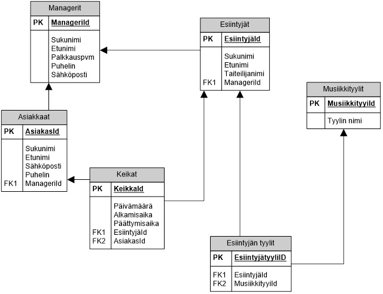

Kertausta
Yksilötyö
Mieti ja kirjoita vastaukset seuraaviin kysymyksiin (kysymyksen alle) Materiaalia saat käyttää, mutta toisaalta kysymykset ovat tasoltaan sellaisia, että vastaus pitäisi tulla omasta päästä.
- Ensin itsearviointia opintojakson aluksi: Miten hyvin mielestäsi nyt osaat tietokanta-asiat (Access, terminologia, SQL)?
Kirjoita tähän omin sanoin
- Mikä on pääavain (Primary Key) ja mikä on sen merkitys relaatiotietokannoissa?
- Kuka kehitti relaatiotietokannat ja mihin niiden perusajatus perustuu?
- Mikä on viiteavain eli vierasavain (Foreign Key) ja mikä on sen merkitys relaatiotietokannoissa?
- Mitä tarkoittaa lyhenne RDBMS eli suomeksi TKHJ?
- Piirrä, miltä relaatiotietokanta mielestäsi näyttää. Tee sellainen piirros, jonka avulla voisit selittää relaatiotietokannan rakenteen ”ummikolle”. Tarkoitus on, että teet piirroksen itse, etkä kopioi netistä etkä mistään muualtakaan.
- Mikä on indeksi?
- Miksi Opiskelija-taulukon pääavaimena sukunimi ei ole hyvä?

Sitten seuraa vähän SQL-kertausta. Tehtävät perustuvat seuraavan kuvan mukaiseen tietokantaan.
Seuraavan päivän tunneilla kyselyiden tulisi olla valmiita tarkistettavaksi. Tarkoitus tosiaankin on, että jokainen tekee.
- Tee kysely, jonka avulla saat selville kaikkien managerien tiedot nimien mukaisessa aakkosjärjestyksessä (sukunimi ensisijainen ja etunimi toissijainen lajittelukenttä).
- Tee kysely, jolla saat selville kaikkien esiintyjien viime vuoden keikat. Kyselyn tuloksessa pitää näkyä myös esiintyjien nimet.
- Tee kysely, jonka avulla saat selville kaikki rokkariesiintyjät. Huom!. Rock on musiikkityylin nimi.
- Tee kysely, jonka avulla saat selville, kuinka monta asiakasta tietokannassa on.
- Tee kysely, jonka avulla saat selville, kuinka monta asiakasta kullakin managerilla on.
- Millaisella kyselyllä saat lisättyä tietokantaan uuden keikan?
- Millaisella kyselyllä saat poistettua tietokannasta tietyn nimisen asiakkaan?
- Millaisella kyselyllä saat muutettua tietyn nimisen managerin puhelinnumeron?